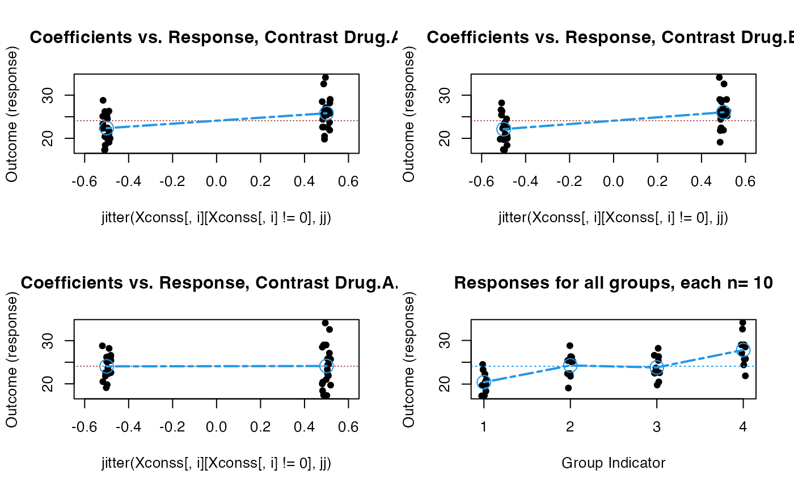
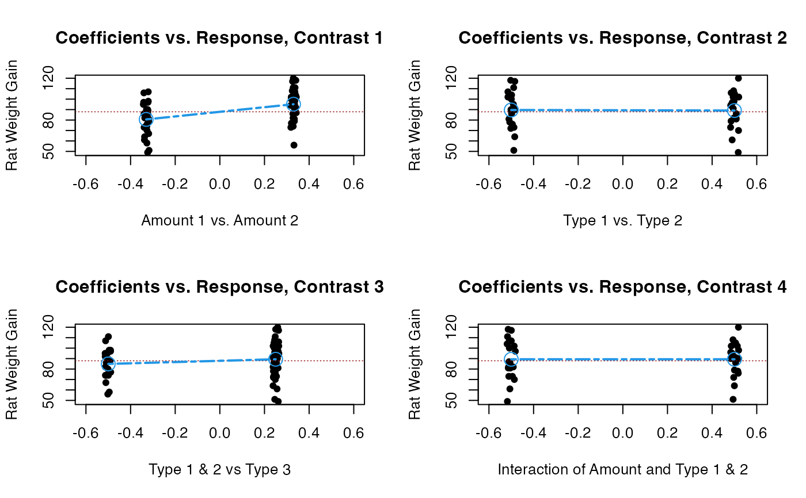
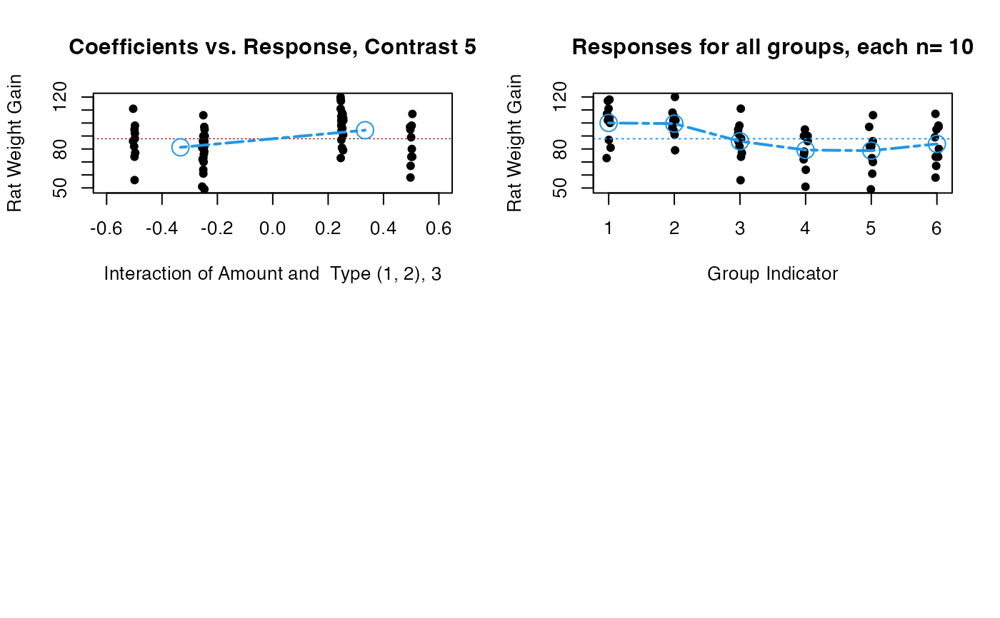
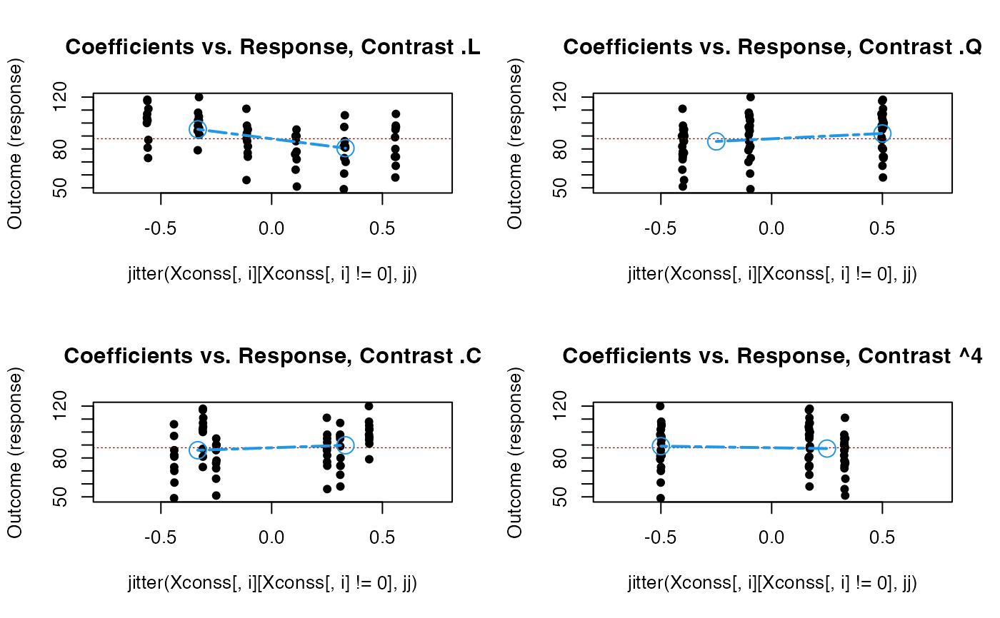
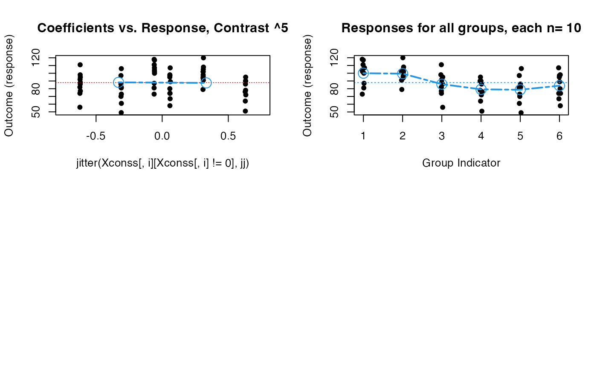
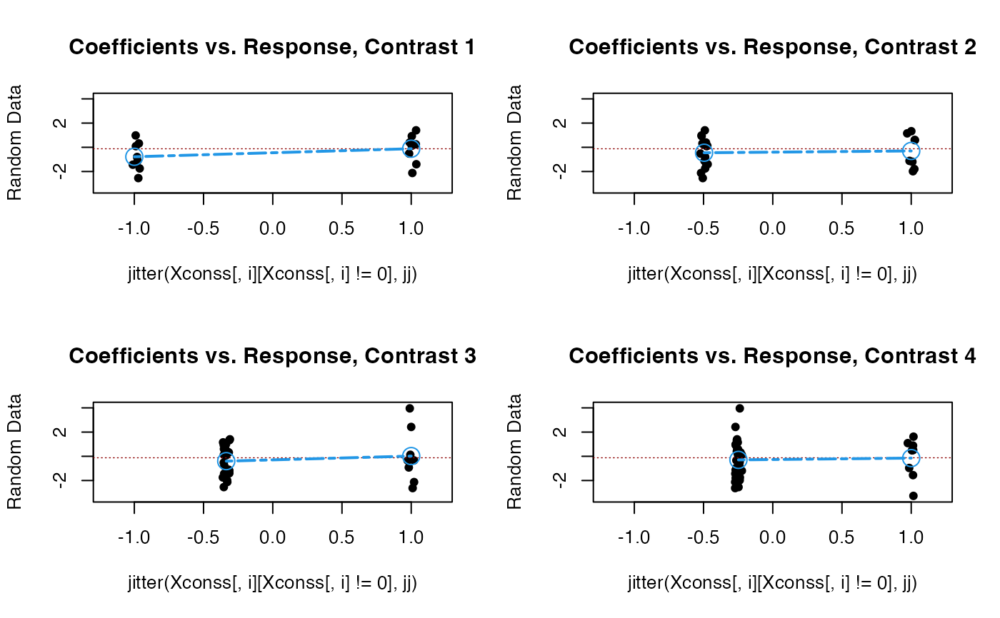
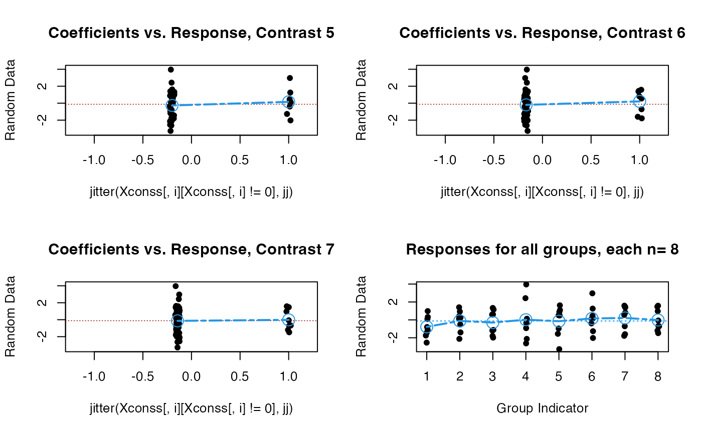

Graphic Display of Contrast Effect of ANOVA
granova.contr.RdProvides graphic displays that shows data and effects for a priori contrasts in ANOVA contexts; also corresponding numerical results.
Arguments
- data
Vector of scores for all equally sized groups, or a data.fame or matrix where each column represents a group.
- contrasts
Matrix of column contrasts with dimensions (number of groups [G]) x (number of contrasts) [generally (G x G-1)].
- ylab
Character; y axis lable.
- xlab
Character vector of length number of contrast columns. To name the specific contrast being made in all but last panel of graphic. Default =
NULL- jj
Numeric; controls
jitterand confers the possibility of controlling the amount of jitter in the panel plots for the contrasts Default is 1.
Details
Function provides graphic displays of contrast effects for prespecified contrasts in ANOVA. Data points are displayed
as relevant for each contrast based on comparing groups according to the positive and negative contrast coefficients for each
contrast on the horizontal axis, against response values on the vertical axis. Data points corresponding to groups not being
compared in any contrast (coefficients of zero) are ignored. For each contrast (generally as part of a 2 x 2 panel) a line
segment is given that compares the (weighted) mean of the response variable for the negative coefficients versus the positive
coefficients. Standardized contrasts are used, wherein the sum of (magnitudes) of negative coefficients is unity; and the same
for positive coefficients. If a line is `notably' different from horizontal (i.e. slope of zero), a `notable' effect has
been identified; however, the question of statistical significance generally depends on a sound context-based estimate of
standard error for the corresponding effect. This means that while summary aov numerical results and test statistics are presented
(see below), the appropriateness of the default standard error generally requires the analyst's judgment. The response
values are to be input in (a stacked) form, i.e. as a vector, for all cells (cf. arg. ylab). The matrix of contrast vectors contrasts
must have G rows (the number of groups), and a number of columns equal to the number of prespecified contrasts, at most G-1. If
the number of columns of contrasts is G-1, then the number per group, or cell size, is taken to be length(data)/G, where G = nrow(contrasts).
If the number of columns of contrasts is less than G-1 then the user must stipulate npg, the number in each group or cell.
The function is designed for the case when all cell sizes are the same, and may be most helpful when the a priori contrasts
are mutually orthogonal (e.g., in power of 2 designs, or their fractional counterparts; also when specific row or column comparisons,
or their interactions (see the example below based on rat weight gain data)). It is not essential that contrasts be
mutually orthogonal; but mutual linear independence is required. (When factor levels correspond to some underlying continuum
a standard application might use con = contr.poly(G), for G the number of groups; consider also contr.helmert(G).)
The final plot in each application shows the data for all groups or cells in the design, where groups are simply numbered from 1:G,
for G the number of groups, on the horizontal axis, versus the response values on the vertical axis.
Value
Two sets of numerical results are presented: Weighted cell means for positive and negative coefficients
for each a priori contrast, and summary results from lm.
- summary.lm
Summary results for a linear model analysis based on the R function
lm(When effects are simple, as in an equal n's power of 2 design, mean differences will generally correspond to the linear regression coefficients as seen in thelmsummary results.)- means.pos.neg.coeff
table showing the (weighted) means for positive and negative coefficients for each (row) contrast, and for each row, the difference between these means in the final column
- means.pos.neg.coeff
Table showing the (weighted) means for positive and negative coefficients for each (row) contrast, and for each row, the difference between these means, and the standardized effect size in the final column.
- contrasts
Contrast matrix used.
- group.means.sds
Group means and standard deviations.
- data
Input data in matrix form.
Examples
data(arousal)
contrasts22 <- data.frame( c(-.5,-.5,.5,.5),
c(-.5,.5,-.5,.5), c(.5,-.5,-.5,.5) )
names(contrasts22) <- c("Drug.A", "Drug.B", "Drug.A.B")
granova.contr(arousal, contrasts = contrasts22)

#> $summary.lm
#>
#> Call:
#> lm(formula = resp ~ contrst)
#>
#> Residuals:
#> Min 1Q Median 3Q Max
#> -5.910 -2.015 -0.075 1.885 6.290
#>
#> Coefficients:
#> Estimate Std. Error t value Pr(>|t|)
#> (Intercept) 24.0825 0.4657 51.712 < 2e-16 ***
#> contrst1 3.4650 0.9314 3.720 0.000676 ***
#> contrst2 3.9150 0.9314 4.203 0.000166 ***
#> contrst3 0.0750 0.9314 0.081 0.936267
#> ---
#> Signif. codes: 0 ‘***’ 0.001 ‘**’ 0.01 ‘*’ 0.05 ‘.’ 0.1 ‘ ’ 1
#>
#> Residual standard error: 2.945 on 36 degrees of freedom
#> Multiple R-squared: 0.4668, Adjusted R-squared: 0.4223
#> F-statistic: 10.5 on 3 and 36 DF, p-value: 4.173e-05
#>
#>
#> $means.pos.neg.coeff
#> neg pos diff stEftSze
#> Drug.A 22.35 25.82 3.46 1.18
#> Drug.B 22.12 26.04 3.91 1.33
#> Drug.A.B 24.05 24.12 0.07 0.03
#>
#> $contrasts
#> Drug.A Drug.B Drug.A.B
#> [1,] -0.5 -0.5 0.5
#> [2,] -0.5 0.5 -0.5
#> [3,] 0.5 -0.5 -0.5
#> [4,] 0.5 0.5 0.5
#>
#> $group.means.sds
#> [,1] [,2] [,3] [,4]
#> Means 20.43 24.27 23.82 27.81
#> S.D.s 2.41 2.81 2.74 3.67
#>
#> $data
#> [,1] [,2] [,3] [,4]
#> [1,] 20.4 22.4 20.5 34.1
#> [2,] 20.0 22.4 26.6 32.6
#> [3,] 24.5 26.2 25.4 29.0
#> [4,] 19.7 28.8 22.6 29.0
#> [5,] 17.3 26.3 22.5 25.7
#> [6,] 17.4 19.1 26.3 21.9
#> [7,] 18.4 25.4 19.8 28.5
#> [8,] 21.0 25.1 28.2 25.8
#> [9,] 22.3 21.8 23.7 27.1
#> [10,] 23.3 25.2 22.6 24.4
#>
data(rat)
dat6 <- matrix(c(1, 1, 1, -1, -1, -1, -1, 1, 0, -1, 1, 0, 1, 1, -2,
1, 1, -2, -1, 1, 0, 1, -1, 0, 1, 1, -2, -1, -1, 2), ncol = 5)
granova.contr(rat[,1], contrasts = dat6, ylab = "Rat Weight Gain",
xlab = c("Amount 1 vs. Amount 2", "Type 1 vs. Type 2",
"Type 1 & 2 vs Type 3", "Interaction of Amount and Type 1 & 2",
"Interaction of Amount and Type (1, 2), 3"))


#> $summary.lm
#>
#> Call:
#> lm(formula = resp ~ contrst)
#>
#> Residuals:
#> Min 1Q Median 3Q Max
#> -29.90 -8.75 2.20 10.80 27.30
#>
#> Coefficients:
#> Estimate Std. Error t value Pr(>|t|)
#> (Intercept) 8.787e+01 1.891e+00 46.465 < 2e-16 ***
#> contrst1 2.202e+01 5.730e+00 3.843 0.000322 ***
#> contrst2 -5.000e-01 4.632e+00 -0.108 0.914440
#> contrst3 5.933e+00 5.349e+00 1.109 0.272205
#> contrst4 -1.289e-16 4.632e+00 0.000 1.000000
#> contrst5 1.253e+01 5.349e+00 2.343 0.022827 *
#> ---
#> Signif. codes: 0 ‘***’ 0.001 ‘**’ 0.01 ‘*’ 0.05 ‘.’ 0.1 ‘ ’ 1
#>
#> Residual standard error: 14.65 on 54 degrees of freedom
#> Multiple R-squared: 0.2848, Adjusted R-squared: 0.2185
#> F-statistic: 4.3 on 5 and 54 DF, p-value: 0.002299
#>
#>
#> $means.pos.neg.coeff
#> neg pos diff stEftSze
#> 1 80.60 95.13 14.53 0.99
#> 2 89.60 89.10 -0.50 -0.03
#> 3 84.90 89.35 4.45 0.30
#> 4 89.35 89.35 0.00 0.00
#> 5 81.27 94.47 13.20 0.90
#>
#> $contrasts
#> [,1] [,2] [,3] [,4] [,5]
#> [1,] 0.333 -0.5 0.25 -0.5 0.25
#> [2,] 0.333 0.5 0.25 0.5 0.25
#> [3,] 0.333 0.0 -0.50 0.0 -0.50
#> [4,] -0.333 -0.5 0.25 0.5 -0.25
#> [5,] -0.333 0.5 0.25 -0.5 -0.25
#> [6,] -0.333 0.0 -0.50 0.0 0.50
#>
#> $group.means.sds
#> [,1] [,2] [,3] [,4] [,5] [,6]
#> Means 100.00 99.50 85.90 79.20 78.70 83.90
#> S.D.s 15.14 10.92 15.02 13.89 16.55 15.71
#>
#> $data
#> [,1] [,2] [,3] [,4] [,5] [,6]
#> [1,] 118 120 111 95 106 107
#> [2,] 117 108 98 90 97 98
#> [3,] 111 105 95 90 86 97
#> [4,] 107 102 92 90 82 95
#> [5,] 104 102 88 86 82 89
#> [6,] 102 98 86 78 81 80
#> [7,] 100 96 82 76 73 74
#> [8,] 87 94 77 72 70 74
#> [9,] 81 91 74 64 61 67
#> [10,] 73 79 56 51 49 58
#>
#Polynomial Contrasts
granova.contr(rat[,1],contrasts = contr.poly(6))


#> $summary.lm
#>
#> Call:
#> lm(formula = resp ~ contrst)
#>
#> Residuals:
#> Min 1Q Median 3Q Max
#> -29.90 -8.75 2.20 10.80 27.30
#>
#> Coefficients:
#> Estimate Std. Error t value Pr(>|t|)
#> (Intercept) 87.864 1.891 46.464 < 2e-16 ***
#> contrst1 -19.135 4.968 -3.851 0.000314 ***
#> contrst2 9.669 5.054 1.913 0.061050 .
#> contrst3 8.339 5.519 1.511 0.136643
#> contrst4 -4.405 5.260 -0.837 0.406018
#> contrst5 1.343 4.678 0.287 0.775079
#> ---
#> Signif. codes: 0 ‘***’ 0.001 ‘**’ 0.01 ‘*’ 0.05 ‘.’ 0.1 ‘ ’ 1
#>
#> Residual standard error: 14.65 on 54 degrees of freedom
#> Multiple R-squared: 0.2848, Adjusted R-squared: 0.2185
#> F-statistic: 4.3 on 5 and 54 DF, p-value: 0.002299
#>
#>
#> $means.pos.neg.coeff
#> neg pos diff stEftSze
#> .L 95.13 80.60 -14.53 -0.99
#> .Q 85.83 91.95 6.12 0.42
#> .C 85.97 89.77 3.80 0.26
#> ^4 89.10 87.25 -1.85 -0.13
#> ^5 88.20 87.53 -0.67 -0.05
#>
#> $contrasts
#> .L .Q .C ^4 ^5
#> [1,] -0.556 0.5 -0.313 0.167 -0.062
#> [2,] -0.333 -0.1 0.438 -0.500 0.312
#> [3,] -0.111 -0.4 0.250 0.333 -0.625
#> [4,] 0.111 -0.4 -0.250 0.333 0.625
#> [5,] 0.333 -0.1 -0.438 -0.500 -0.313
#> [6,] 0.556 0.5 0.312 0.167 0.063
#>
#> $group.means.sds
#> [,1] [,2] [,3] [,4] [,5] [,6]
#> Means 100.00 99.50 85.90 79.20 78.70 83.90
#> S.D.s 15.14 10.92 15.02 13.89 16.55 15.71
#>
#> $data
#> [,1] [,2] [,3] [,4] [,5] [,6]
#> [1,] 118 120 111 95 106 107
#> [2,] 117 108 98 90 97 98
#> [3,] 111 105 95 90 86 97
#> [4,] 107 102 92 90 82 95
#> [5,] 104 102 88 86 82 89
#> [6,] 102 98 86 78 81 80
#> [7,] 100 96 82 76 73 74
#> [8,] 87 94 77 72 70 74
#> [9,] 81 91 74 64 61 67
#> [10,] 73 79 56 51 49 58
#>
#based on random data
data.random <- rt(64, 5)
granova.contr(data.random, contrasts = contr.helmert(8),
ylab = "Random Data")


#> $summary.lm
#>
#> Call:
#> lm(formula = resp ~ contrst)
#>
#> Residuals:
#> Min 1Q Median 3Q Max
#> -3.1213 -0.9461 -0.0043 1.0574 3.9406
#>
#> Coefficients:
#> Estimate Std. Error t value Pr(>|t|)
#> (Intercept) -0.12152 0.18691 -0.650 0.518
#> contrst1 0.33239 0.37382 0.889 0.378
#> contrst2 0.09907 0.43280 0.229 0.820
#> contrst3 0.31340 0.45692 0.686 0.496
#> contrst4 0.11750 0.47361 0.248 0.805
#> contrst5 0.35289 0.48260 0.731 0.468
#> contrst6 0.34873 0.48889 0.713 0.479
#> contrst7 0.10505 0.49402 0.213 0.832
#>
#> Residual standard error: 1.495 on 56 degrees of freedom
#> Multiple R-squared: 0.04216, Adjusted R-squared: -0.07757
#> F-statistic: 0.3521 on 7 and 56 DF, p-value: 0.9257
#>
#>
#> $means.pos.neg.coeff
#> neg pos diff stEftSze
#> 1 -0.78 -0.12 0.66 0.44
#> 2 -0.45 -0.30 0.15 0.10
#> 3 -0.40 0.02 0.42 0.28
#> 4 -0.30 -0.15 0.15 0.10
#> 5 -0.27 0.16 0.42 0.28
#> 6 -0.20 0.21 0.41 0.27
#> 7 -0.14 -0.02 0.12 0.08
#>
#> $contrasts
#> [,1] [,2] [,3] [,4] [,5] [,6] [,7]
#> 1 -1 -0.5 -0.333 -0.25 -0.2 -0.167 -0.143
#> 2 1 -0.5 -0.333 -0.25 -0.2 -0.167 -0.143
#> 3 0 1.0 -0.333 -0.25 -0.2 -0.167 -0.143
#> 4 0 0.0 1.000 -0.25 -0.2 -0.167 -0.143
#> 5 0 0.0 0.000 1.00 -0.2 -0.167 -0.143
#> 6 0 0.0 0.000 0.00 1.0 -0.167 -0.143
#> 7 0 0.0 0.000 0.00 0.0 1.000 -0.143
#> 8 0 0.0 0.000 0.00 0.0 0.000 1.000
#>
#> $group.means.sds
#> [,1] [,2] [,3] [,4] [,5] [,6] [,7] [,8]
#> Means -0.78 -0.12 -0.30 0.02 -0.15 0.16 0.21 -0.02
#> S.D.s 1.17 1.18 1.36 2.21 1.65 1.53 1.38 1.21
#>
#> $data
#> [,1] [,2] [,3] [,4] [,5] [,6]
#> [1,] -2.5422757 0.9264432 1.3304733 3.9590620 0.5144548 -2.0233997
#> [2,] -1.4372856 -1.3979794 -1.1215124 -0.9216528 0.4890872 -0.3930753
#> [3,] 0.3183981 0.2460819 -1.1946631 -2.1286663 -0.9630636 2.9681730
#> [4,] -0.7988103 -2.1215723 -1.7967592 2.4246077 0.8859863 1.2567750
#> [5,] 0.0932677 -0.5182534 0.5914792 -2.6252950 -3.2695807 0.4473582
#> [6,] -1.1224413 0.1282597 -1.9793208 -0.3373257 -1.5549854 0.1058768
#> [7,] -1.7458695 1.4026809 0.6088321 -0.3494214 1.6217424 -1.2664296
#> [8,] 0.9806918 0.3982869 1.1519509 0.1262532 1.0898569 0.1659829
#> [,7] [,8]
#> [1,] -1.5995771 1.58037655
#> [2,] -0.7112758 -1.20645017
#> [3,] 1.3820262 -0.71557222
#> [4,] -1.7830316 -0.68287204
#> [5,] 1.4546144 -1.48105933
#> [6,] 0.8118312 -0.06993895
#> [7,] 0.5589865 1.47474192
#> [8,] 1.5830900 0.96898384
#>